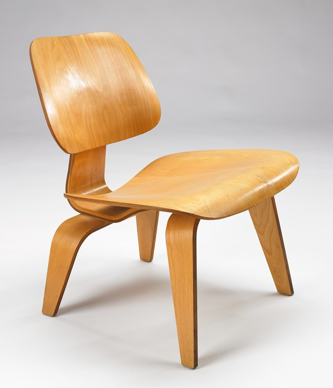

Craft is how well you design within the constraints you are given.
Judgment is how accurately you map them, and knowing which ones to challenge.
By Matthew Martin ·
Keys to the design problem — the ability of the designer to recognize as many of the
constraints as possible — his willingness and enthusiasm for working within these
constraints. Constraints of price, of size, of strength, of balance, of surface,
of time and so forth.
Charles Eames
Teams treat constraints as the thing standing between them and product release.
The budget is too small. The engineer is only half allocated. The legacy system will not bend.
Charles Eames saw it the other way around. Constraints are not in front of the design problem.
They are the design problem. Find as many constraints as you can. Then work within them, gladly.
He named price, size, strength, balance, surface, and time.
Then he wrote "and so forth." That open ending is where product design lives.

Eames LCW, molded plywood. Every curve answers a constraint you can see.
A chair shows you its constraints
A chair is tangible. You can weigh it, measure it, and sit on it.
If it is too heavy or too wobbly, everyone in the room can tell.
Digital products hide most of their constraints. They do not live in the object.
They live in people, systems, and decisions
spread across the organization.
Undocumented. Someone knows, but it is not written down.
Change. A staffing shift or a new contract moves them overnight.
Layered. A screen can be fine on its own and still break a downstream system.
Social. Ownership, trust, and past promises shape what is possible.
You will not find these by looking at the screen. You find them by asking.
Eames's framework applied to digital product design
Surface
The interface itself, across every touchpoint: app, web, internal tools, and email.
Each surface carries its own limits.
Tech
Legacy systems, APIs, and what the design system already supports.
Capacity
Who is actually staffed, at what allocation, and for how long.
Business
Revenue model, compliance, and stakeholder commitments already made.
Human
Users' mental models, habits, and trust thresholds.
Time
Two kinds.
Delivery time: release cadence, dependencies, and sequencing.
User time: attention, task length, and patience. A chair only had the first kind.
Recognize as many as possible
That line is discovery. And discovery is not only user research.
My team calls it being detectives. Multiple product verticals with unclear ownership is a constraint.
A team without a technical lead is a constraint. A design that ignores them
looks great in Figma. Then it becomes throwaway work.
When a new direction ignores the constraints the current one was built around,
the people who built it feel that first. That frustration is a signal, not resistance.
Willingness is not enthusiasm
Eames asked for both. How do they differ?
Willingness is accepting the constraint. Enthusiasm is using it as material.
Do not treat constraints as compromises to the "real" design, treat them as material.
A 40% allocation or a single engineer does not water down the right solution.
It shapes what the right solution actually is.
Constraint evolution
Recognize the constraints.
Test which ones can move, and which are real limits versus habits.
Make the case to change the ones that do the most damage.
Which constraints to challenge
Fixed
Laws, physics, contracts, and the core business model. Design within these.
Structural
Budget, staffing, team boundaries, and tech stack. Challengeable, but expensive and slow.
Inherited
"We have always done it this way." Old decisions nobody remembers making.
Assumptions about what users will not accept.
Usually the cheapest to move, and often the most damaging.
Look for where high cost meets low certainty. Find the constraint that blocks the most value
and that nobody can explain the reason for.
When to challenge
Early. Before a roadmap or estimate locks in.
After commitments are made, a challenge reads as disruption instead of insight.
At natural openings. Planning cycles, budget seasons, reorgs, and leadership changes.
Org constraints go soft during transitions.
Not mid-delivery. Unless the constraint will cause the work to fail.
Otherwise, log it and raise it at the next opening.
How to make it land
Show the cost. What living with the constraint is costing,
in their terms: revenue, time, rework, and trust.
Bring an alternative. A challenge without one just sounds like a complaint.
Start with a cheap test. A prototype, a pilot, or one small team trying it first.
It works because nobody has to bet everything.
The flip side
Choosing not to challenge something matters too. Say it out loud.
"We are accepting this for now, and here is why."
That builds the credibility you will need for the fights that count.
The short version
Craft is how well you design within the constraints you are given.
Judgment is how accurately you map them, and knowing which ones to challenge.
Glossary
Term
Meaning
Fixed constraint
A limit that cannot move, such as a law or contract.
Structural constraint
A limit set by how the organization is built. It can move, at a cost.
Inherited constraint
A limit that exists because of a past decision or assumption, not a current need.
Allocation
The share of a person's time assigned to a project.